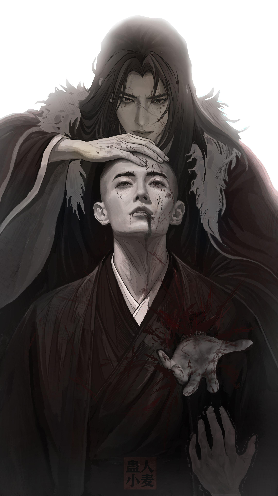

Capítulo 2210 - A morte de Paraíso Terrestre
"Paraíso Terrestre, estou disposto a compartilhar o meu gelo flutuante verdadeiro com você. Agora não podemos nos dar ao luxo de deixar um ao outro na mão, devemos estar unidos e trabalhar juntos." Fang Yuan gritou.
O Paraíso Terrestre assentiu: "Fang Yuan, você tem razão!"
Dizendo isso, ele fez seu movimento.
Mas ele ignorou Fang Yuan, ele mirou em um pedaço de gelo flutuante verdadeiro.
O gelo flutuante verdadeiro foi rapidamente mantido na abertura imortal do Paraíso Terrestre.
Ao mesmo tempo, o Zumbi Imortal Sol Gigante mirou novamente no maior gelo flutuante verdadeiro!
Enquanto ele obtivesse isso, ele seria o maior vencedor nesta situação da Caverna do Demônio Enlouquecido. Os dois veneráveis foram incapazes de derrotar um ao outro, se o Zumbi Imortal Sol Gigante quisesse partir, a Venerável Imortal Constelação Estelar não conseguiria pará-lo.
"Nem pense nisso!" A Venerável Imortal Constelação Estelar tinha um olhar frio.
Bam.
Movimentos assassinos colidiram, a Venerável Imortal Constelação Estelar conseguiu repelir o Zumbi Imortal Sol Gigante novamente, mas ela não conseguiu parar o Paraíso Terrestre a tempo. Método do caminho do céu!
O método do caminho do céu que o Paraíso Terrestre usou para pegar o gelo flutuante verdadeiro foi muito profundo, a sua aura estava inicialmente oculta ao limite, nem mesmo os dois veneráveis podiam detectá-la. Após a ativação, o movimento foi extremamente rápido, nem mesmo a Venerável Imortal Constelação Estelar conseguiu pará-lo a tempo, permitindo que o Paraíso Terrestre tivesse sucesso!
A Venerável Imortal Constelação Estelar suspirou profundamente, ela pegou aquele misterioso domínio isolado do céu e da terra de novo.
Este domínio isolado do céu e da terra parecia uma lanterna, uma vez que a Venerável Imortal Constelação Estelar usou o seu movimento assassino, ela levantou a lanterna e iluminou todos os Imortais.
No momento seguinte, um tsunami feito de emoções infinitas surgiu nos corações dos imortais!
As suas expressões mudaram abruptamente, eles resistiram com dificuldade.
Fang Yuan ativou o Gu fortitude enquanto o Zumbi Imortal Sol Gigante incutia a essência imortal no Gu emoção familiar, em vez disso, o Paraíso Terrestre ativou o movimento assassino céu e terra sem emoção para resolvê-lo.
A Venerável Imortal Constelação Estelar riu, ela tirou a Montanha do Livro novamente.
A Montanha do Livro brilhou com uma luz deslumbrante, todos os tipos de movimentos assassinos foram replicados e desencadeados nos Imortais.
Houve o método do Zumbi Imortal Sol Gigante, os movimentos assassinos do Ancestral Mar de Qi e do Demônio Imortal Qi Jue, o movimento assassino do Paraíso Terrestre e até o método do Venerável Demônio Ilimitado!
Neste momento, a Venerável Imortal Constelação Estelar finalmente liberou toda a sua força, usando os dois movimentos assassinos com estes dois domínios isolados do céu e da terra como núcleos para suprimir todos que estavam presentes no momento.
A sua expressão empalideceu imediatamente, os pontos de luz das estrelas ao redor dela diminuíram, ela havia consumido mais de dez bilhões de pensamentos para fazer isso, eles foram quase totalmente gastos.
Usando este tempo, a Venerável Imortal Constelação Estelar ativou a Montanha do Livro, as correntes do Ilimitado voaram para agarrar o gelo flutuante verdadeiro e enviá-lo para a sua abertura imortal.
Este gelo flutuante verdadeiro não era o maior, mas continha um Gu Imortal!
Ninguém percebeu este Gu Imortal, exceto a Venerável Imortal Constelação Estelar.
Precisamente por causa disso, ela estava disposta a desistir temporariamente do maior pedaço de gelo flutuante verdadeiro e pegou este pedaço menor primeiro.
Depois de recolher o Gu Imortal, a Venerável Imortal Constelação Estelar parou imediatamente o seu movimento assassino, ela guardou a Montanha do Livro e concentrou-se na defesa.
A sua ação foi muito sábia.
O Zumbi Imortal Sol Gigante não conseguia mais se controlar.
No momento seguinte, ele gritou alto, uma luz dourada disparou ferozmente com a sua retaliação.
Os ataques caíram duramente, forçando a Venerável Imortal Constelação Estelar a recuar continuamente, ela era como uma lentilha d'água flutuante e indefesa na tempestade.
Aproveitando esta oportunidade, o Zumbi Imortal Sol Gigante pegou um pedaço do gelo flutuante verdadeiro também.
Este não era o maior pedaço de gelo flutuante verdadeiro, mas era o mais próximo do Zumbi Imortal Sol Gigante.
Como ele sabia que só poderia suprimir a Venerável Imortal Constelação Estelar por algumas respirações de tempo, não havia tempo para pegar o maior gelo flutuante verdadeiro!
Como esperado, no momento seguinte, a Venerável Imortal Constelação Estelar se recuperou e atacou o Zumbi Imortal Sol Gigante novamente.
Os dois veneráveis lutaram intensamente, como estavam usando toda a sua força enquanto tentavam pegar os pedaços de gelo flutuante verdadeiro, eles não tinham tempo ou energia para gastar nos outros assuntos. Isso deu aos pseudo-veneráveis uma boa chance.
Fang Yuan e o Paraíso Terrestre levaram três ou quatro pedaços cada.
Lu Wei Yin, Shen Shang e Mar de Qi também obtiveram um ou dois pedaços.
Pouco depois, os fragmentos de gelo flutuante verdadeiro foram todos levados, exceto pelo último pedaço maior!
Os dois veneráveis agora tinham ferimentos consideráveis, as suas tentativas de pegá-lo foram todas frustradas pela outra parte.
Os dois veneráveis correram contra o tempo, atacando os pseudo-veneráveis de novo.
Desta vez, eles lutaram com mais motivação. Afinal, os pseudo-veneráveis tinham todos alguns pedaços de gelo flutuante verdadeiro com eles.
"Ah?" Enquanto os dois veneráveis suprimiam os pseudo-veneráveis, começaram a se sentir um pouco surpresos.
Porque o Paraíso Terrestre estava exibindo uma força de batalha maior do que antes!
Quase a cada respiração, a sua força aumentava em certa medida, a sua aura já estava se aproximando do nível de um venerável de rank nove agora.
Os olhos da Venerável Imortal Constelação Estelar brilharam com uma luz forte: "Então é isso. Paraíso Terrestre, como se converteu em cultivar o caminho do céu, e como este gelo flutuante verdadeiro está intimamente relacionado com o caminho do céu, pode extrair dele força para elevar o seu nível de cultivo, este é um método brilhante!"
A Venerável Imortal Constelação Estelar falou num tom de admiração, mas a sua intenção de matar surgiu correspondentemente também.
Mais cedo, quando Fang Yuan pediu ajuda, o Paraíso Terrestre ignorou-o para agarrar aquele gelo flutuante verdadeiro, então este foi o motivo!
Evidentemente, desde que ele conseguisse pedaços de gelo flutuante verdadeiro suficientes, o Paraíso Terrestre seria capaz de atenuar a falha de ter sido prematuramente revivido e tornar-se de novo um venerável.
E desta vez, ele não seria um venerável do caminho da terra, mas um venerável do caminho do céu!
Assim que o Paraíso Terrestre se tornasse num venerável do caminho do céu, a sua força provavelmente subiria para o topo do mundo.
A Venerável Imortal Constelação Estelar e o Zumbi Imortal Sol Gigante não iam ficar sentados vendo isso acontecer.
O Gu Destino(Fate) tinha sido destruído, o mundo inteiro era praticamente governado por eles. Ninguém ia querer ver o regresso do Venerável Imortal Paraíso Terrestre, especialmente quando este Venerável Imortal Paraíso Terrestre teria muito mais força do que eles!
Não houve comunicação, os dois veneráveis trabalharam juntos pela terceira vez.
Desta vez, desistiram de Fang Yuan e concentraram-se no Paraíso Terrestre.
O Paraíso Terrestre ativou movimentos assassinos do caminho do céu de forma consecutiva para bloquear os ataques dos dois veneráveis, mas logo, mostrou sinais de ser incapaz de continuar.
Embora os métodos do caminho do céu fossem vastos e profundos, os dois veneráveis tinham mais força agora.
O Paraíso Terrestre caiu numa crise de vida ou morte, ele gritou para os restantes: "Por favor, deêm-me uma mão!"
Lu Wei Yin e Shen Shang hesitaram por um momento antes de atirarem os seus pedaços de gelo flutuante verdadeiro para o tesouro do paraíso amarelo quase ao mesmo tempo.
O Paraíso Terrestre pegou os gelos flutuantes verdadeiros do tesouro do paraíso amarelo e usou-os rapidamente para elevar o seu nível de cultivo.
A sua aura cresceu mais uma vez, ele estava a meros centímetros de alcançar o nível de venerável.
"Estou a apenas um passo de distância, Fang Yuan!" O Paraíso Terrestre transmitiu com urgência.
Fang Yuan riu: "Posso lhe dar o gelo flutuante verdadeiro, mas Paraíso Terrestre, você pode pagar um preço suficiente que me satisfaça?"
O Paraíso Terrestre cerrou os dentes, ele enviou imediatamente a verdadeira herança do Paraíso Terrestre das Planícies do Norte para o tesouro do paraíso amarelo, junto com todos os tipos de movimentos assassinos do caminho do céu e as suas próprias experiências de cultivo do caminho do céu.
Claro, o mais importante foi o acordo de aliança.
Para obter o gelo flutuante verdadeiro mais crucial, o Paraíso Terrestre fez uma grande concessão!
Fang Yuan colocou um pequeno pedaço de gelo flutuante verdadeiro no tesouro do paraíso amarelo, os dois realizaram a transação rapidamente.
"Haha, Paraíso Terrestre, você também pode ter as peças finais de gelo flutuante verdadeiro!" Após a transação ser concluída, Fang Yuan gritou alto.
O coração do Paraíso Terrestre tremeu.
De fato, no momento seguinte, ambos os veneráveis explodiram com movimentos assassinos ao redor do Paraíso Terrestre, bombardeando-o com ataques!
A Venerável Imortal Constelação Estelar ergueu a lanterna bem alto, emoções infinitas assaltaram o seu coração.
O Zumbi Imortal Sol Gigante agarrou com as mãos continuamente, atacando a sorte do Paraíso Terrestre.
O Paraíso Terrestre estava coberto de ferimentos aterrorizantes, ele era como um mortal pendurado em um penhasco, a poucos momentos de morrer.
Shen Shang, Lu Wei Yin, e até Fang Yuan e o Ancestral Mar de Qi atacaram de longe, usando movimentos assassinos para tentar ajudar o Paraíso Terrestre.
Mas foi inútil!
O Paraíso Terrestre rangeu os dentes, debatendo-se desesperadamente. O gelo flutuante verdadeiro derretia gradualmente, ajudando-o a atingir mais uma vez o nível de venerável!
Mas no momento crucial, o movimento assassino do Paraíso Terrestre cometeu um erro peculiar.
O movimento assassino falhou e a retaliação foi acionada, o nível de cultivo do Paraíso Terrestre ficou preso no passo final.
Os ataques dos dois veneráveis chegaram e engoliram instantaneamente o Paraíso Terrestre.
"Salvem-no depressa!" Lu Wei Yin gritou e foi o primeiro a se mover.
Os corações dos outros pseudo-veneráveis também saltaram ao entrar em ação.
Os dois veneráveis não queriam ver o Paraíso Terrestre a ser salvo e também o perseguiram.
Os pseudo-veneráveis usaram todas as suas forças e não ligaram para o próprio perigo, conseguindo bloquear os ataques do Zumbi Imortal Sol Gigante com grande dificuldade.
Mas a luz estelar da Venerável Imortal Constelação Estelar ainda atingiu o corpo do Paraíso Terrestre.
O Paraíso Terrestre gritou alto, com as veias do rosto salientes enquanto usava toda a sua força para ativar um movimento assassino.
Com o seu movimento assassino defensivo quebrado, o seu corpo ficou coberto de inúmeros buracos que foram devastados pela luz estelar, mas o seu método de cura ainda era eficaz. O Paraíso Terrestre agarrava-se à força ao seu último suspiro.
Naquele momento, o Mar de Qi moveu-se, protegendo Fang Yuan, que rapidamente se aproximou do Paraíso Terrestre.
"Fang Yuan!" Lu Wei Yin e Shen Shang deram um solavanco, e a luz da esperança brilhou nos seus olhos.
As expressões dos dois veneráveis caíram ligeiramente.
No exato momento em que Fang Yuan estava prestes a salvar o Paraíso Terrestre...
Bang!
A palma de Fang Yuan bateu nas costas do Paraíso Terrestre e atravessou seu peito.
O Paraíso Terrestre já estava nas últimas e o ataque de Fang Yuan foi o golpe fatal que ele não conseguiu suportar.
No momento anterior à sua morte, o Paraíso Terrestre arregalou os olhos e agarrou a mão de Fang Yuan.
"Paraíso Terrestre, descanse em paz." Fang Yuan sorriu levemente.
No momento seguinte, a aura decrescente do Paraíso Terrestre dissipou-se por completo.
Ele morreu com os olhos bem abertos!

A cena inteira estremeceu.
Os dois veneráveis olharam para Fang Yuan com expressões peculiares.
Os lábios de Lu Wei Yin tremiam. Ele quebrou o silêncio e gritou com voz rouca: "Fang Yuan, o que você fez?!"
"Fang Yuan, isto..." Os globos oculares de Shen Shang quase iam saltar para fora.
O Ancestral Mar de Qi parou ao lado do corpo principal de Fang Yuan, também demonstrando uma expressão estranha.
Todos sabiam que naquela situação, com dois veneráveis incomparáveis, o Paraíso Terrestre era a sua única esperança de resistir a eles. Mas quem matou esta esperança não foram os dois veneráveis, mas o próprio Fang Yuan!
O Fang Yuan estava louco?
Ele realmente fez algo assim!
Era absurdo demais.
"Há algo de errado", murmurou o Zumbi Imortal Sol Gigante para si mesmo.
A Venerável Imortal Constelação Estelar também franziu ligeiramente a sobrancelha, mas não falou.
Os dois veneráveis viram que Fang Yuan mantinha o cadáver do Paraíso Terrestre na abertura imortal soberana de forma tão calma que sentiram uma ligeira mudança na atmosfera.
"Fang Yuan, como vamos sair desta?" Perguntou Shen Shang, ansioso.
"Sem o Senhor Paraíso Terrestre, como podemos resistir aos dois veneráveis?!" Lu Wei Yin batia com os pés e olhava furioso para Fang Yuan.
Fang Yuan sorriu simplesmente: "É simples. Não seria bom se eu fosse um venerável?"
Ao dizer isso, ele já não ocultava a sua aura, expondo-a naquele momento.
Nível de cultivo de rank nove!
De imediato, todo o campo de batalha ficou em silêncio.
"Meros truques." A Venerável Imortal Constelação Estelar bufou friamente, e a luz das estrelas fluiu como água enquanto corria em direção a Fang Yuan.
Fang Yuan expirou levemente, e uma maré de qi derramou-se e bloqueou toda a luz das estrelas.
Do outro lado, o Zumbi Imortal Sol Gigante também tentou sondar, e agulhas douradas choveram como uma chuva torrencial.
Fang Yuan acenou com a mão, e uma aurora vermelha encheu o céu, incinerando todas as agulhas de ouro.
As pupilas dos dois veneráveis contraíram-se.
Lu Wei Yin, Shen Shang e até mesmo o clone de Fang Yuan, o Ancestral Mar de Qi, ficaram boquiabertos.
Mesmo contra os ataques dos dois veneráveis, Fang Yuan bloqueou-os com perfeição. Ele exibiu um nível de cultivo de rank nove genuíno!
Ele Tinha realmente se tornado um venerável?!